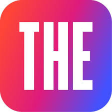

Work with Me
Cambridge. Career. EdTech. Consulting. All grounded in 15+ years of classroom reality.
After 15 years working inside schools — building Cambridge programmes, guiding students at crossroads, training teachers, and helping institutions make sense of AI in education — I have come to believe that the best outcomes start with listening. My approach is built around your specific context, not templates or one-size solutions. Every engagement is structured, documented, and ends with clear next steps for both of us.
How I Can Help
Six focused areas of engagement — each one drawn from real-world practice.
From initial affiliation planning to curriculum mapping — I help schools navigate the Cambridge setup process with clarity and confidence. Backed by experience supporting 5 schools through launch and programme expansion.
Complete, step-by-step guidance from the Cambridge Portal to results day — structured training, documentation support, and ongoing availability for every question along the way.
CAP-accredited, personalised career guidance. We work through subject choices, university options, and long-term direction — at your pace, grounded in real data, not sales pitches.
Focused, practical workshops on pedagogy, Cambridge curriculum delivery, AI tools in education, and professional development — designed around your school's actual needs, not a fixed syllabus.
Practical guidance on integrating AI into teaching, learning, and school operations — built on real classroom experience and up-to-date knowledge of tools that actually work in school settings.
Strategic and operational support for technology decisions — drawing on experience at Infosys and Ernst & Young, combined with 10+ years of school-based EdTech adoption and implementation.
How It Works
Simple, structured, and respectful of your time.
A focused one-hour conversation — online or in person — to understand your context, goals, and challenges. No obligation, no pitch. Just listening.
Periodic, focused sessions built around your requirements. Every meeting ends with clear action items — for you and for me. We move forward together, not just talk.
Every engagement is clearly documented. You leave with a record you can act on independently — not just notes from a conversation that fades over time.
Backed by Recognised Credentials
A selection most relevant to this work — from 30+ certifications earned.

What People Say
Recommended by colleagues, leaders, and fellow educators.
Let's Start a Conversation
First session is free for all services. Reach out below — I respond within 24 hours.
Send an Enquiry
Let me know what you need and I'll get back to you.
Or reach out directly
Available via email or WhatsApp. Online sessions via Google Meet.
In-person sessions available across Tamil Nadu.
Online sessions via Google Meet — available pan-India and internationally.